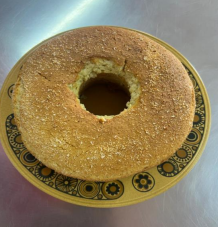

← Volver al módulo 1

Queque de Coco
Queque suave y aromático con delicioso sabor a coco rallado.
Ingredientes
- 5 huevos
- 2 tazas de harina
- 1 taza de azúcar
- ½ taza de aceite
- 2 cucharillas de polvo de hornear (PH)
- ¾ taza de coco rallado
- 1 cucharilla de esencia de coco
- ½ taza de leche
Preparación
Preparar el mise en place.
Separar las claras y las yemas.
Batir las claras con la mitad del azúcar hasta llegar a punto nieve y las yemas con la otra mitad hasta obtener punto letra.
Añadir el aceite en forma de hilo y la esencia de coco.
Mezclar todos los ingredientes secos en un bol.
Incorporar las yemas a las claras y añadir poco a poco la mezcla al bol de ingredientes secos, mezclando de forma envolvente hasta obtener una masa homogénea.
Verter la mezcla en un molde y hornear por 30 minutos a 180 °C.